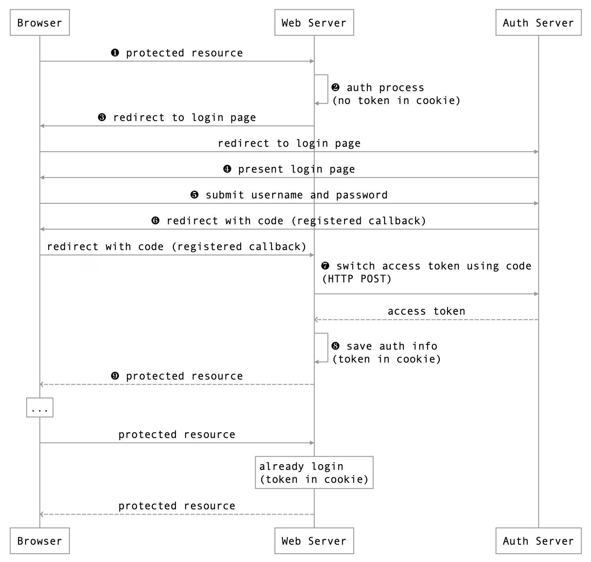

QQ 提供了标准的 OAuth 2.0 第三方登录功能，可以按照 QQ 互联的文档 (http://wiki.connect.qq.com ) 例如使用 HttpClient 进行网络访问，集成 QQ 的第三方登录到我们的系统里，也可以使用 Scribe-Java 来集成 QQ 的第三方登录，这样就会简单很多。
ScribeJava 是一个简单的 Java 实现的 OAuth/OAuth2 库。https://github.com/scribejava/scribejava
下面就介绍使用 Scribe-Java 实现使用 QQ 的第三方登录。
注册 QQ 互联账号
在开发前，需要在 QQ 互联 注册一个开发者账号: https://connect.qq.com
然后点击 应用管理: https://connect.qq.com/manage.html
创建 网站应用，里面有开发需要的 APP ID 和 APP Key
修改 hosts 例如我们在 QQ 互联中填写的回调 URL 为 http://open.qtdebug.com:8080/oauth/qq/callback ，很显然 QQ 服务器是不能访问这个地址的，因为这个地址不存在，为了在 QQ 登陆成功后 QQ 服务器能访问这个地址，需要在系统的 hosts 文件里添加 127.0.0.1 open.qtdebug.com。
还有另一种方式是使用如 Ngrok 把本地映射为外网可访问。
Gradle 依赖 为了使用 ScribeJava，需要依赖
1 compile 'com.github.scribejava:scribejava-apis:3.2.0'
为了使用 FastJson 解析 QQ 返回的 JSON 响应，需要依赖
1 compile 'com.alibaba:fastjson:1.2.17'
QQApi ScribeJava 已经集成了了几十个网站登陆的 Service，不幸的是没有提供 QQ 的，不过没关系，我们可以使用 ada.young 实现的 QQApi，在 http://git.oschina.net/cng1985/scribejava 上下载，把 QQApi.java 和 OsChinaOAuthServiceImpl.java 放到我们的工程中即可。
OAuth 的流程 
登录成功后会生成一个临时的 code 作为参数从 Auth Server 重定向到 Web Server，因为重定向是 GET 请求，可能会被拦截到，所以 code 是临时的，用于 Web Server 使用此 code 到 Auth Server 换取最终的 access token，以后客户端使用此 access token 作为凭证访问 Web Server 上的保护资源。
QQ 登陆的代码 先放上 QQ 登陆的代码 QQOAuthController.java 和 QQOAuthService.java，然后再对其进行讲解。
QQOAuthController.java 1 2 3 4 5 6 7 8 9 10 11 12 13 14 15 16 17 18 19 20 21 22 23 24 25 26 27 28 29 30 31 32 33 34 35 36 37 38 39 40 41 42 43 44 45 46 47 48 49 50 51 52 53 54 package com.xtuer.controller;import com.alibaba.fastjson.JSONObject;import com.xtuer.service.QQOAuthService;import org.springframework.beans.factory.annotation.Autowired;import org.springframework.stereotype.Controller;import org.springframework.web.bind.annotation.CookieValue;import org.springframework.web.bind.annotation.GetMapping;import org.springframework.web.bind.annotation.RequestParam;import org.springframework.web.bind.annotation.ResponseBody;import javax.servlet.http.Cookie;import javax.servlet.http.HttpServletResponse;import java.io.IOException;@Controller public class QQOAuthController @Autowired private QQOAuthService qqOAuthService; @GetMapping("/oauth/qq") public String qqLogin () return "redirect:" + qqOAuthService.getLoginUrl(); } @GetMapping("/oauth/qq/callback") @ResponseBody public String qqLoginCallback (@RequestParam("code") String code, HttpServletResponse response) throws IOException String accessToken = qqOAuthService.getAccessToken(code); Cookie cookie = new Cookie("accessToken" , accessToken); cookie.setMaxAge(60 * 24 * 30 ); response.addCookie(cookie); return accessToken; } @GetMapping("/oauth/qq/user") @ResponseBody public String getUserInfo (@CookieValue(name = "accessToken", required = false) String accessToken) throws IOException if (accessToken == null ) { return "There is no access token, please login first!" ; } String openId = qqOAuthService.getOpenId(accessToken); JSONObject json = qqOAuthService.getUserInfo(accessToken, openId); return json.toJSONString(); } }
QQOAuthService.java 1 2 3 4 5 6 7 8 9 10 11 12 13 14 15 16 17 18 19 20 21 22 23 24 25 26 27 28 29 30 31 32 33 34 35 36 37 38 39 40 41 42 43 44 45 46 47 48 49 50 51 52 53 54 55 56 57 58 59 60 61 62 63 64 65 66 67 68 69 70 71 72 73 74 75 76 77 78 79 80 81 82 83 84 85 86 87 88 89 90 91 92 93 94 95 96 97 98 99 100 101 102 103 104 105 106 107 108 109 110 111 112 113 package com.xtuer.service;import com.alibaba.fastjson.JSON;import com.alibaba.fastjson.JSONObject;import com.github.scribejava.apis.QQApi;import com.github.scribejava.core.builder.ServiceBuilder;import com.github.scribejava.core.model.OAuth2AccessToken;import com.github.scribejava.core.model.OAuthRequest;import com.github.scribejava.core.model.Response;import com.github.scribejava.core.oauth.OAuth20Service;import org.springframework.stereotype.Service;import java.io.IOException;@Service public class QQOAuthService private static final String OPEN_ID_URL = "https://graph.qq.com/oauth2.0/me" ; private static final String USER_INFO_URL = "https://graph.qq.com/user/get_user_info?oauth_consumer_key=%s&openid=%s" ; private String callbackUrl = "http://open.qtdebug.com:8080/oauth/qq/callback" ; private String apiKey = "101292272" ; private String apiSecret = "5bdbe9403fcc3abe8eba172337904b5a" ; private String scope = "get_user_info" ; private OAuth20Service oauthService; public QQOAuthService () oauthService = new ServiceBuilder().apiKey(apiKey).apiSecret(apiSecret) .scope(scope).callback(callbackUrl).build(QQApi.instance()); } public String getLoginUrl () return oauthService.getAuthorizationUrl(); } public String getAccessToken (String code) throws IOException OAuth2AccessToken token = oauthService.getAccessToken(code); String accessToken = token.getAccessToken(); return accessToken; } public String getOpenId (String accessToken) throws IOException Response oauthResponse = request(oauthService, accessToken, OPEN_ID_URL); String responseBody = oauthResponse.getBody(); int s = responseBody.indexOf("{" ); int e = responseBody.lastIndexOf("}" ) + 1 ; String json = responseBody.substring(s, e); JSONObject obj = JSON.parseObject(json); return obj.getString("openid" ); } public JSONObject getUserInfo (String accessToken, String openId) throws IOException String url = String.format(USER_INFO_URL, apiKey, openId); Response oauthResponse = request(oauthService, accessToken, url); String responseJson = oauthResponse.getBody(); return JSON.parseObject(responseJson); } public Response request (OAuth20Service service, String accessToken, String url) OAuth2AccessToken token = new OAuth2AccessToken(accessToken); OAuthRequest oauthRequest = new OAuthRequest(service.getApi().getAccessTokenVerb(), url, service); service.signRequest(token, oauthRequest); Response oauthResponse = oauthRequest.send(); return oauthResponse; } }
代码讲解
创建 OAuth20Service 对象，用于访问 QQ 服务
1 2 oauthService = new ServiceBuilder().apiKey(apiKey).apiSecret(apiSecret) .scope(scope).callback(callbackUrl).build(QQApi.instance());
登陆访问 http://open.qtdebug.com:8080/oauth/qq ，自动重定向到 QQ 登陆页面，登陆 URL 调用 oauthService.getAuthorizationUrl() 获得。
QQ 登陆成功后，回调到 QQOAuthController.qqLoginCallback()，调用 qqOAuthService.getAccessToken(code) 取得 access token，有效期为 3 个月。为了方便以后使用这个 access token，所以把它存储到 cookie。
ScribeJava 只提供了登陆和获取 accessToken 的功能，例如想要获取用户的 open id 等其他信息就必须我们自己实现了，所以上面的代码封装了 QQOAuthService.request()，用于访问 OAuth Server，具体使用请参考 QQOAuthService.getOpenId() 和 QQOAuthService. getUserInfo():
思考 拿到用户的 open id 和昵称等后怎么用呢？
一般都会在用户登陆成功后回调 QQOAuthController.qqLoginCallback() 中得到 access token，然后取得用户的 open id，用它在我们的系统中查看此 open id 是否有对应的账号，如果有则进行自动登录，如果没有，则进入账号绑定页面，询问是创建新账号还是绑定已有账号，其中又有可能需要获取用户的昵称，大致逻辑如下:
1 2 3 4 5 6 7 8 9 10 11 12 13 14 15 16 17 18 19 20 21 22 23 24 @GetMapping("/oauth/qq/callback") public String qqLoginCallback (@RequestParam("code") String code, HttpServletResponse response) throws IOException String accessToken = qqOAuthService.getAccessToken(code); Cookie cookie = new Cookie("accessToken" , accessToken); cookie.setMaxAge(60 * 24 * 30 ); response.addCookie(cookie); String openId = qqOAuthService.getOpenId(accessToken); User user = UserDao.findUserByOpenId("QQ_" + openId); if (user == null ) { return "redirect:/bindingAccountPage.html" ; } else { } return "登陆结果.html" ; }
第三方账号和本地的用户账号一般也会使用一个中间表进行关联，例如
id
use_id
third_party_account_id
type
1
100000
QQ_AS23DCF3
QQ
2
100001
WX_BDAD1D3F
Weixin
参考资料